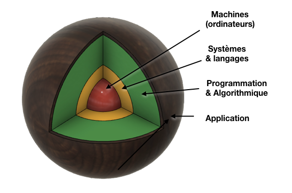
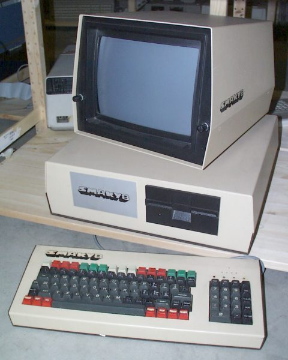

Histoire de l’informatique¶
Attention
Ce document est en cours de rédaction.
Une (brève) histoire de l’informatique¶
Si l’histoire de l’informatique prend ses racines loin dans notre histoire, cette science, encore très jeune, trouve sa place au milieu du XXe siècle. L’éclosion de l’informatique se situe en 1940, à la croisée d’opportunités technologiques, d’enjeux stratégiques et de contributions d’autres branches. C’est ainsi au coeur des conflits de la Deuxième guerre mondiale que l’importance de calculateurs programmables se fait sentir.
Le terme “informatik” apparaît en 1957 pour le traitement automatique de l’information dans un article de Karl Steinbuch. Il est officialisé en Français en 1962 par Philippe Dreyfus. En Anglais, pour des questions de droits des marques, le terme restera computer science.

Préinformatique¶
Les premiers dispositifs de calcul utilisent des petits cailloux (calculus en latin). Cet artifice était également utilisé pour compter les bêtes d’un troupeau par les bergers.
Les machines mécaniques¶

La machine d’Anticythère, plus de 100 ans av. J.-C., propose une représentation mécanique des mouvements astronomiques. En 1642, Blaise Pascal conçoit la Pascaline, une machine à calculer mécanique qui se base cette fois sur une représentation arithmétique traduite dans des rouages mécaniques. Au tout début du XIXe siècle, la machine de Joseph Jacquard dispose d’un mécanisme programmable basé sur des aiguilles et des cartes perforées. Enfin, cette histoire des machines mécaniques se termine en 1948 avec la calculatrice Curta, probablement le dispositif le plus abouti avant l’avènement des calculettes électroniques, fabriquée au Lichtenstein et vendue à plus de 140’000 exemplaires.

Mise au point au début du XXe siècle, la machine enigma, utilisée par les Nazis pendant la Deuxième guerre mondiale, est une machine électromécanique qui lance la transition entre les dispositifs mécaniques et les systèmes électroniques. Elle joue également le rôle de catalyseur pour une partie des travaux d’Alan Turing.
Du simple calcul à la séquence¶
Le mot algorithme découle de la latinisaton du nom de Muhammad Ibn Mūsā al-Khuwārizmī au [VIII]{.smallcaps} et IXe siècles. Les boites à musique utilisent par la suite un cylindre hérissé de picots, tout comme les automates, à l’instar du canard de Vaucanson1 (1734). Ces cylindres deviennent par la suite des bandes ou cartes perforées comme dans les métiers de Jacquard ou les orgues de barbarie. Au début du IXe siècle, Georges Boole formalise la logique moderne et ce qu’on appelle aujourd’hui en son honneur l’algèbre de Boole. Cet algèbre est repris plus tard dans la construction des systèmes logiques à la base du fonctionnement des ordinateurs.

En 1837, Charles Babbage propose une machine analytique à l’architecture très innovante. On y trouve une mémoire, une unité arithmétique et logique, ainsi qu’un lecteur de cartes perforées (emprunté aux machines de Jacquard). Lady Ada Lovelace, considérée comme la première informaticienne de l’histoire, collaborera avec Babbage en créant les notions algorithmiques de boucles et de branchements conditionnels, qui déboucheront sur la conception d’une deuxième version de sa machine. Avec les notions de variables et de sous-programme, on trouve esquissés dans cette machine quasiment tous les éléments de l’architecture des ordinateurs modernes. On leur doit notamment la notion de machine générale, au-delà du dispositif dédié à une tâche ou un calcul particulier.
Éclosion¶
La Deuxième guerre mondiale catalyse des développements sans précédent dans les sciences. On voit ainsi apparaître le spatial, le nucléaire et l’informatique. Ces trois domaines répondent à des enjeux stratégiques et reçoivent un soutien considérable. C’est le cas d’Alan Turing dont le projet est soutenu par Winston Churchill lui-même pour décrypter les messages des nazis.
L’informatique prend son essor à la croisée de trois enjeux majeurs : les développements de l’électronique, la cryptologie et les besoins en calculs paramétriques et automatiques notamment liés à la balistique.
Développement de l’électronique¶

Le radar constitue un dispositif plus que stratégique pendant la Deuxième guerre mondiale pour prévenir les raids aériens de l’Allemagne nazie. La RAF (Royal Air Force) défend jalousement cette technologie et l’entoure du secret le plus absolu. Pour justifier les interventions au bon endroit et au bon moment de ses forces aériennes, la propagande diffusera largement l’idée fausse que les aviateurs de la RAF voyaient mieux la nuit parce qu’il mangeaient beaucoup de carottes. D’ailleurs, ce boniment a encore cours aujourd’hui pour convaincre les enfants. Les radio-communications représentent aussi un outil stratégique largement développé en particulier dans la résistance française. Des entreprises suisses comme Kudelski y trouvent leurs racines. L’usage du tube électronique ou tube à vide ou encore lampe développée au début du XXe siècle constitue un appui essentiel à ces développements, en particulier pour le radar. On retrouve également cette technologie utilisée à large échelle dans les premiers ordinateurs qui apparaissent au sortir de la guerre.
Balistique et projet Manhattan¶

L’équation bien connue \(ax^2 + bx + c = 0\) est à la base des premiers calculs balistiques. Mais la prise en compte de paramètres atmosphériques (humidité, vent, frottement, etc.) rend rapidement les calculs bien plus compliqués. L’armée prépare les tirs en remplissant des tabelles qui sont longues et fastidieuses à établir. L’utilisation d’une machine à faire automatiquement des calculs fait rapidement son chemin dans ce domaine et aboutit à la mise au point d’un des premiers calculateurs automatiques : l’ENIAC.
John Von Neumann, un des pères de la bombe atomique, participe au projet Manhattan2 et travaille au laboratoire national de Los Alamos. Ses travaux dans la mise au point de la bombe A nécessitent de longs et coûteux calculs. Ils déboucheront sur des algorithmes comme la méthode de Monte-Carlo visant à optimiser les calculs et la mise au point d’ordinateurs permettant de raccourcir ces derniers. On lui attribue la proposition d’une architecture d’ordinateur qui porte son nom et a encore cours aujourd’hui dans les ordinateurs modernes.
Cryptologie¶

Les U-Boot3, sous-marins de l’Allemagne nazie, font des ravages en mer du nord et dans l’atlantique nord. Ainsi, durant le premier semestre 1942, ce sont 2.5 millions de tonnes de ravitaillement, essentiellement à destination du Royaume-Uni, qui sont envoyés par le fond. L’essentiel de la stratégie des U-Boot reposait sur l’envoi de communications cryptées au moyen d’une version sophistiquée de la machine Enigma réputée inviolable. À Bletchley Park, principal site de décryptage du Royaume Uni, Alan Turing met au point une machine électro-mécanique capable de déchiffrer les message cryptés en une vingtaine de minutes, alors que cela prenait plusieurs jours dans le meilleur des cas à des humains. Ces calculateurs automatiques exploraient bien plus rapidement les possibilités et les contraintes posées par la machine Enigma.
Histoire moderne de l’informatique¶
À la fin de la Deuxième guerre mondiale, les universités, qui ont reçu l’appui de l’armée, se retrouvent donc avec des ordinateurs, à l’époque de gigantesques machines, relativement lentes (quelques dizaines d’opérations par seconde).
Premiers ordinateurs issus de la Seconde guerre mondiale¶
Allemagne¶
Z3, Berlin : est une machine entièrement électromécanique constituée de relais, dont la construction s’est achevée en 1941. Elle a été entièrement détruite par des bombardements en 1943. Elle est elle aussi considérée comme le premier ordinateur programmable par certains historiens.

Etat-Unis¶
ENIAC, Université de Pennsylvanie : opérationnel à la fin de 1945, dévoilé au public en février 1946. Il pèse 30 tonnes et occupe une surface de 167 \(m^2\). Sa fonction est principalement de calculer des tables de tirs. Ces dernières étaient calculées par des femmes engagées par l’armée, et ce sont également ces six femmes appelées “The Computers” qui seront les premières programmeuses de cette machine4. L’ENIAC est le premier calculateur entièrement programmable.
Les ordinateurs Mark 1 et II construits par IBM à l’Université de Harvard, livré en 1944. L’équipe de programmeurs est rapidement rejointe par une jeune mathématicienne recrutée par l’US Navy : Grace Hopper.

Royaume Uni¶
Colossus, opérationnel en décembre 1943 à Bletchley Park.
Manchester Mark I, à l’Université de Manchester, opérationnel en avril 1949 sur lequel Alan Turing a lui-même effectué des travaux de programmation.
Russie¶
L’histoire des développements informatiques en Russie à cette époque n’est pas très claire. Les États-Unis interdisent jusque dans les années nonantes l’exportation de tout matériel de calcul sensible, en particulier au niveau des puces électroniques. Les Russes développent leurs propres architectures comme par exemple l’ordinateur Setun à l’Université d’État de Moscou en 1958, le tout premier ordinateur à travailler en ternaire et non en binaire.
Deuxième vague de calculateurs militaires¶
Suisse¶
Cora 1, EPFL : pour répondre aux besoins de l’armée, la société Contraves AG développe une machine classée secret défense pour réaliser des calculs balistiques et fabriquée à soixante exemplaires. Son concepteur, Peter Toth, commence la conception de cette machine dès la fin des années cinquante.

Académisation et apparition de la science informatique¶
Matériel et logiciels¶
On réalise rapidement que l’informatique repose sur deux domaines bien distincts : le matériel et les logiciels (en anglais Hardware et Software, termes qui apparaissent pour la première fois en 1953).

Les premiers ordinateurs sont difficiles à programmer et à utiliser. On se consacre alors essentiellement à des travaux de calcul. Dans le monde académique, on réalise cependant rapidement tout le potentiel de ces machines programmables. Mais un traitement plus conceptuel de l’information demande des outils et notions plus abstraits. La planète informatique incorpore alors plusieurs domaines avec un enrichissement de la partie logicielle qui se construit sur du matériel de plus en plus complexe et performant.
{kind=link}
On réalise donc rapidement que le logiciel représente un élément essentiel, et en particulier : le système d’exploitation. Pour concevoir les logiciels, il devient également important de disposer de langages de plus haut niveau que le langage compris par la machine elle-même (le langage machine).
Les langages de programmation¶
Nous donnons ici une synthèse de l’histoire des langages de programmation. Il en existe aujourd’hui un nombre incalculable et on ne trouve pas de recensement exact de toutes les bizarreries qui ont été proposées durant les dernières décennies. Ainsi en 1993, Urban Müller invente le Brainfuck, dont l’ambition est de proposer un langage simple et pouvant s’exécuter sur une machine de Turing. Le Brainfuck est effectivement Turing-complet, mais les programmes sont difficiles à lire et peu efficaces.
Avant l’éclosion¶
Le premier langage de programmation, avec le tout premier programme informatique jamais écrit par l’humanité, est attribué à Lady Ada Lovelace vers 1840. On trouve ensuite Alan Turing avec sa machine éponyme en 1936, puis Konrad Zuse en 1945.
Premiers langages informatiques¶
Le premier véritable langage informatique qui s’éxécute sur une machine électromécanique revient à nouveau à une femme avec le langage A-0 System mis au point par Grace Hopper en 1951. On trouve ensuite les langages suivants qui ont, pour certains, presque disparu, mais qui existent encore pour certaines applications :
1954, FORTRAN.
1958, ALGOL 58.
1959, Lisp, premier langage dit fonctionnel.
Invention du transistor¶
L’invention du transistor en 1957 permet de remplacer les tubes peu fiables, coûteux, encombrants et consommant beaucoup d’énergie. Dès la fin des années cinquante et jusqu’au début des années soixante, les ordinateurs plus fiables et plus complexes utilisent ainsi cette nouvelle technologie.
Nouvelle génération de langages de programmation¶
Les langages de programmation suivants font leur apparition :
1960, Cobol.
1962, Simula I, considéré comme étant à la base des langages orientés objet avec la notion de classe.
1964, Basic, langage impératif facile d’accès et qui démocratise la programmation.
1968, Logo, le langage à la tortue, mis au point par Seymour Papert pour enseigner la programmation aux enfants.
Apparition des circuits intégrés¶
Les circuits intégrés sont inventés par Jack Kilby en 1958. C’est le début de l’intégration de quantités phénoménales de transistors dans de toutes petites puces électroniques proposant des fonctions de calcul de plus en plus rapides et complexes. Cette intégration s’accompagne d’une croissance dans le cadre de ce qu’on appelle la troisième vague d’ordinateurs. On peut désormais envisager d’embarquer des unités de calculs programmables dans des dispositifs comme les fusées du programme Apollo de la NASA ou les missiles balistiques intercontinentaux dès le milieu des années soixante. Les ordinateurs commercialisés par IBM puis DEC et enfin Hewlett Packard ne sont plus des machines spécialisées pour un domaine mais couvrent l’ensemble des domaines commerciaux et scientifiques. Cette génération d’ordinateur fonctionne avec une fréquence d’horloge voisine de 1MHz et effectue une centaine de milliers d’opérations par seconde.
Loi de Moore¶
Le chimiste Gordon Earle Moore fonde la société Intel en 1968. Il énonce déjà en 1963 la loi de Moore qui prédit que le nombre de transistors dans les circuits intégrés doublera tous les 18 mois. Cette loi s’avère relativement valable jusqu’à nos jours ou cette croissance commence à fléchir. En 2006, les processeurs d’Intel sont cadencés à 3.6GHz et dépassent 80 million de transistors.
Du mini au micro¶
Au début des années septante, apparaît la dénomination miniordinateur pour marquer une diffusion plus large de ces machines désormais moins encombrantes dans tous les domaines. En 1971, le microprocesseur est inventé par Marcian Hoff (société Intel) et Federico Faggin. Le premier microprocesseur Intel est présenté la même année. On parle de quatrième génération d’ordinateur avec l’arrivée du microprocesseur et son intégration dans son développement qui connaît un nouvel essor.
Langage de programmation¶
Dès les années septante, les langages suivant apparaissent :
1971, Pascal, inventé par Niklaus Wirth, professeur à l’école Polytechnique de Zurich.
1972, Smalltalk, premier langage pur objet et qui marque avec ce nouveau paradigme le début d’une nouvelle ère dans la programmation.
1972, C, longtemps le langage de programmation le plus utilisé, à la base du système UNIX et encore aujourd’hui au coeur de la plupart des développements autour du système Linux.
1974, SQL, un langage de requêtes utilisé encore utilisé aujourd’hui pour l’extraction d’information dans la plupart des bases de données (relationnelles).
Apparition de la micro-informatique : Small is beautifull¶
En 1973 apparaissent les premiers micro-ordinateurs qui sont destinés à un usage personnel (simultanément en France et en Allemagne). Le coût des mini-ordinateurs est prohibitif pour certaines sociétés et certains champs d’applications, la micro-informatique permet une diffusion encore plus large de la technologie informatique. Citons parmi ces pionniers l’Apple I de Steve Jobs et Steve Wozniak (figure 0.1{reference-type=“ref” reference=“AppleI”}), le Commodore PET (figure 0.2{reference-type=“ref” reference=“PET”}).


Langages de programmation¶
Avec l’extension de l’informatique à de nombreux domaines, une nouvelle discipline voit le jour dans les années huitantes : le génie logiciel ou la science de la construction logicielle. De nouveaux langages apparaissent pour appuyer ce domaine et renforcer une production de programmes sous pression alors que les besoins en fiabilité deviennent de plus en plus cruciaux.
1983, Ada, projet du DoD5 pour répondre au besoin de mettre en place des projets informatiques plus fiables.
1983, C++, une évolution du C dans un langage objet.
1985, Postscript, un langage permettant de composer des documents et qui puisse être interprété par une imprimante.
1991, Python, langage d’abord confidentiel qui a connu par la suite un essort considérable avec son adoption dans de nombreux développements de Google.
1995, Java, langage inventé par Sun Microsystems pour répondre au besoin d’indépendance du hardware alors qu’Internet se généralise.
1995, PHP, langage conçu pour rendre les pages Web interactives, avant leur envoi par le serveur.
1995, JavaScript, langage conçu pour rendre les pages interactives du côté du client et développé par Netscape6.
Démocratisation¶
Dès 1982, le commodore 64 (figure 0.3{reference-type=“ref” reference=“commodore64”}), vendu à 20 millions d’exemplaires (il n’existe pas de chiffre exact) et encore aujourd’hui l’ordinateur le plus vendu au monde. Le Raspberry Pi s’approche de ces chiffres, mais en cumulant les ventes de plusieurs modèles différents.

Il est précédé du VIC-20 de la même marque et de nombreuses autres propositions d’ordinateurs extrêmement bon marchés et souvent vendus comme des consoles de jeu intelligentes. Dans les plus connus on trouve ainsi le ZX80 (figure 0.4{reference-type=“ref” reference=“zx80”}) ou le micro de la BBC.

Les ordinateurs ne sont pas encore connectés, mais les utilisateurs, souvent très jeunes, fondent des clubs, se réunissent et échangent des programmes de démonstration. C’est dans ces communautés que naissent souvent les premiers hackers qui se lancent des défis pour concevoir sur ces machines à petit budget des animations souvent impressionnantes.
La micro en Suisse¶
Smaky7 est une famille de micro-ordinateurs développés en Suisse dès 1974 au LAMI-EPFL, dirigé par le Professeur Jean-Daniel Nicoud. Commercialisé dès 1978 par la société EPSITEC SA, il intègre rapidement des fonctionalités réseau et surtout présente dès 1980, avec le Smaky 8, un système d’exploitation multitâche préemptif 8qui en fait un ordinateur puissant qui dispose déjà d’une interface avec des fenêtres. Le développement du Smaky a complètement cessé en 1995 et la société EPSITEC SA s’oriente vers le développement de logiciels comme CRESUS, un logiciel de comptabilité adapté au marché suisse.
{kind=link}
Parallèlement aux Smakys, le Professeur Jean-Daniel Nicoud, développe des machines bon marché à l’intention des clubs d’électronique, d’abord le crocus, puis le Dauphin en 1977 pour 270 CHF. Ce dernier, abondamment utilisé dans les cours du LAMI, est encore aujourd’hui une référence pour apprendre à programmer en langage machine et si ça production a cessé, on trouve un simulateur (disponible à l’adresse : https://www.epsitec.ch/dauphin/ avec toute la documentation nécessaire) qui permet d’en explorer le fonctionnement.

Internet¶
Internet, le réseau des réseaux, est d’abord un projet de l’armée américaine pour mettre en place un réseau décentralisé capable de résister à une attaque nucléaire. En effet, les réseaux de télécommunications, initialement, sont conçus sur une architecture en étoile avec un central (téléphonique) dont la destruction entraîne la mise hors service de l’ensemble du réseau.
Le réseau ARPANET9 est opérationnel pour la première fois en septembre 1969. Il connecte d’abord quelques universités américaines, comme on peut le voir sur la carte figure 0.7{reference-type=“ref” reference=“arpanet”}.

Le terme Internet est utilisé pour la première fois en 1972 par Robert E. Kahn. Ce dernier est avec Vint Cerf l’inventeur du protocole TCP/IP qui est la base du réseau Internet. Le terme Internet remplace officiellement le terme Arpanet en 1983.
Comme pour les premiers ordinateurs, on retrouve dans le développement d’Internet une impulsion de départ dans les enjeux militaires qui ont suivit la Deuxième guerre mondiale, puis une diffusion dans le monde académique associé aux projets de recherche de l’armée américaine.
USENET et modem¶
Les connexions au réseau Internet se font souvent avec des MODEM qui permettent des transmissions de quelques centaines de caractères par seconde. Les USENET sont des forums d’échanges où les premières communautés de Hackers partagent des programmes, des démos et des astuces.
Le logiciel libre¶
Alors que le monde industriel s’organise au début des années huitante pour protéger la propriété intellectuelle liée à la conception de programmes, Richard Stallman, chercheur au laboratoire d’intelligence artificielle du MIT10 s’irrite de cette opacité. L’anecdote rapporte qu’il aurait été particulièrement agacé lorsqu’un de ses anciens collègues aurait refusé de lui confier le code source d’un pilote d’imprimante buggé. Il aurait alors ré-écrit complètement le pilote en question et se serait ensuite interrogé sur la meilleure façon de protéger la diffusion libre du programme en question.

Il invente alors la notion de copyleft, par opposition au copyright : cette licence garantit la libre distribution et l’impossibilité d’aliéner ce droit. En 1984 il crée le projet GNU11 et fonde la Free Software Foundation.
Son idée de logiciel libre va durablement modifier le paysage du logiciel informatique et concerne aujourd’hui des millions de produits.
Le World Wide Web¶
Time Berners Lee, collaborateur du CERN, constate en 1989 que ces collègues commandent régulièrement des copies d’articles scientifiques ce qui occupe plusieurs employés et utilise beaucoup de papier. Il décide alors de mettre au point un système qui permettrait de partager plus efficacement sur le réseau les résultats des chercheurs et invente pour cela trois protocoles :
HTTP pour Hyper Text Transfer Protocol, un protocole de transfert de documents hypertextes.
HTML pour Hyper Text Markup Language, un langage de description qui permet la mise en forme de documents.
URL pour Uniform Resource Locator, qui définit un adressage universel pour identifier et localiser les documents sur le réseau.
En 1992, il donne à cet ensemble le nom de World Wide Web, la toile mondiale, qui permet de disposer sur Internet des documents liés entre eux par des liens hypertextes. En 1993 il obtient du CERNE l’autorisation d’ouvrir la toile au domaine public. En 1992 également, deux étudiants du NCSA (National Center for Supercomputing Applications), Eric Bina et Marc Andreessen, développent le premier navigateur Internet : NCSA Mosaic qui sera disponible pour le public dès 1993. Une bonne partie de l’équipe de développement de Mosaic fonde l’entreprise Netscape12 qui sera pionnière dans le développement du Web.
Le Web 2.0¶
Alors que Microsoft et Netscape se plongent dans la guerre des navigateurs, avec Netscape qui représente 90% des navigateurs en 1996, les innovations se succèdent à rythme effréné. Netscape propose trois innocations majeures :
Les cookies qui permettent de stocker des informations persistant au file des interactions avec un utilisateur.
Les CSS (Cascading Style Sheet) qui permettent une mise en forme beaucoup plus riche et cohérente des documents Web.
Le Javascript qui permet l’exécution de script au sein des documents et permet ainsi des interaction encore plus élaborées avec l’utilisateur.
En 2006 le nombre d’utilisateurs de Netscape tombe à 1%, mais toutes ces innovations permettent le développement du Web 2.0, terme qui apparaît pour la première fois en 2004 et accompagne la naissance d’un nouveau WWW avec en particulier l’apparition des réseaux sociaux.
Ubiquité¶
Le réseau devient sans fil au milieu des années nonante. D’abord une solution marginale, la bande passante disponible évolue de manière continue et permet d’imaginer de plus en plus d’applications sans installation filaire compliquée et coûteuse à mettre en place.
La miniaturisation de puces électroniques intégrant de plus en plus de fonctionnalités et en particulier la capacité de communiquer par ondes radio permet d’envisager des dispositifs intelligents disséminés un peu partout, on parle d’ubiquité du réseau.
Les smartphones¶
L’iPhone a été présenté pour la première fois en juin 2007 par Steve Jobs. Ce n’est pas le premier smartphone commercialisé, puisque Blackberry et Treo proposaient déjà des téléphones portables avec des caractéristiques d’ordinateurs dès 1999 pour le premier et 2002 pour le second.
l’IoT¶
Alors que le marché de la téléphonie mobile explose dès la fin des années nonante, il trouve rapidement sa place dans les applications industrielles avec la mise en place de réseaux de capteurs et de commandes distantes. Avec le développement des smartphones et l’accès au réseau Internet, ce développement connaît un second souffle sous l’appellation Internet of Things (IoT), Internet des Objets. La voiture, la cafetière et même la machine à laver le linge voient leurs possibilités décuplées par l’adjonction de puces électroniques connectées.
Futur¶
Dans une science qui évolue vite, en perpétuel changement, il est difficile de prédire le futur sans prendre le risque de la boule de crystal.
La suprématie quantique¶
En octobre 2019, Google a annoncé avoir mis au point un ordinateur quantique capable de faire mieux que les meilleurs super-calculateurs traditionnels. Alors qu’un ordinateur classique manipule des informations élémentaires faites de \(0\) et de \(1\) (des bits), un ordinateur quantique manipule des q-bits. Ces derniers stockent de l’information comme une superposition de \(0\) et de \(1\) avec une proportion variable. La quantité d’informations ainsi stockée et traitée s’accroît de manière exponentielle. Deux algorithmes sont réputés dans le domaine de l’informatique quantique : l’algorithme de Glover et l’algorithme de Shor. Le premier permet une recherche beaucoup plus efficace dans un index et le deuxième permet une décomposition beaucoup plus efficace en nombres premiers et donne la possibilité de casser les codes utilisés couramment aujourd’hui très rapidement. Cela signifierait que la sécurité liée au cryptage de bon nombre de communications et de transactions serait compromise 13.
Coloniser l’espace ?¶
cf étude du JPL : https://youtu.be/efrNLTVrpwg?t=397
Portraits¶
Notions¶
Mathématique continues¶
Du continu au discontinu¶
Technologies¶
Le musée Bolo¶
Les grandes entreprises de l’informatique¶
IBM, Dec, SUN, Oracle, Microsoft, Netscape, Google, Apple, Facebook …
Une (encore plus brève) histoire du jeu vidéo¶
- 1
Souvent décrit comme la première tentative de robotisation, mais son comportement ne suit qu’un automatisme pré-établi
- 2
Projet top secret de l’armée américaine qui aboutit à la première bombe atomique utilisée dans un conflit armé à Hiroshima : little boy larguée par le bombardier B-29 Enola Gay sur la tristement célèbre ville.
- 3
Abréviation d’Unterseeboot qui signifie sous-marin en allemand. Les forces sous-marines allemandes étaient commandées par l’amiral Dönitz en appliquant sa stratégie de la meute.
- 4
“The computers”, film documentaire de Jon Palfreman, Kathy Kleiman et Kate McMahon sorti le 12 février 2016, disponible en VOD sur Viméo.
- 5
Department of Defense de l’armée américaine, ainsi nommé en référence à la première programmeuse
- 6
Aujourd’hui disparue, la société Netscape a été fondée par les premiers acteurs du World Wide Web et créateurs du premier navigateur, ancêtre de Firefox
- 7
- 8
le multitâche préemptif désigne la capacité d’un système d’exploitation à exécuter ou arrêter une tâche planifiée en cours (Source : Wikipedia). Ce n’est qu’à partir des années 2000 que Windows supporte pleinement ce mécanisme
- 9
Advanced Research Projects Agency Network
- 10
Massachusetts Institute of Technology
- 11
Gnu is Not Unix est un projet de réaliser un système équivalent au système UNIX, mais dont le code source serait librement distribué. Ce projet sera intégré par Linus Torvald qui crée le noyau Linux
- 12
l’ancêtre de Firefox et d’une bonne partie des développements encore d’actualité
- 13
Problème que certaines sociétés ont déjà anticipé, comme ID Quantique : https://en.wikipedia.org/wiki/ID_Quantique